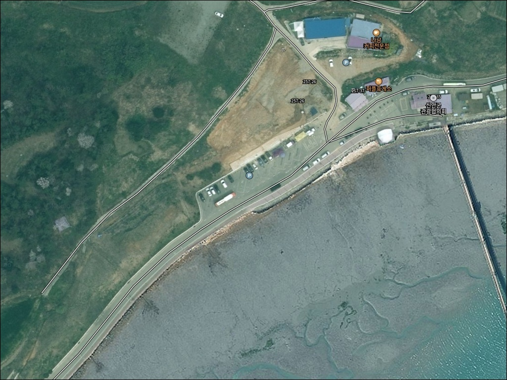
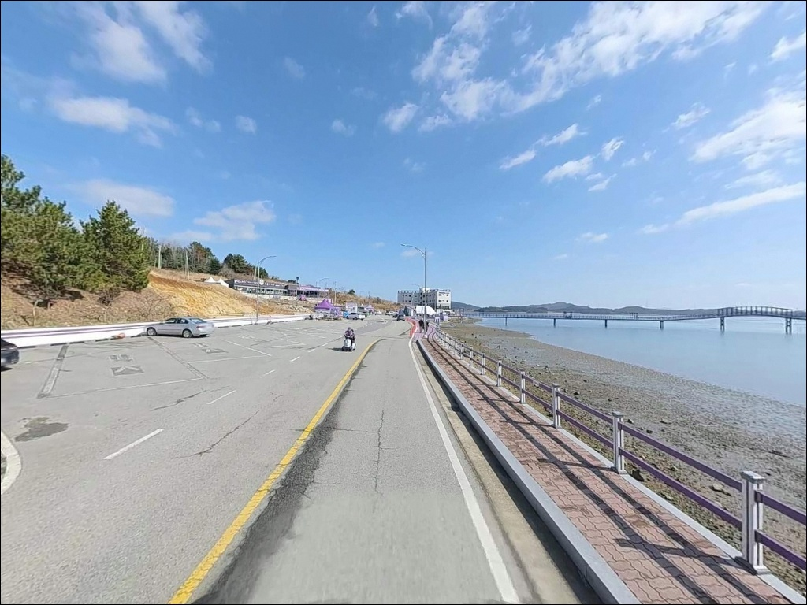
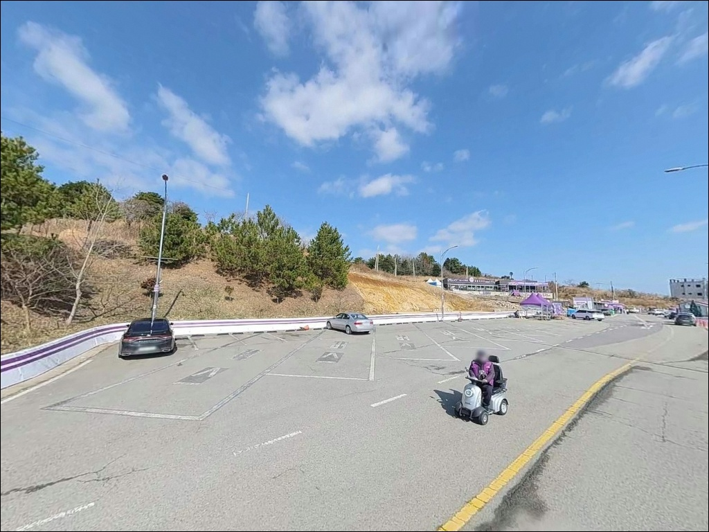
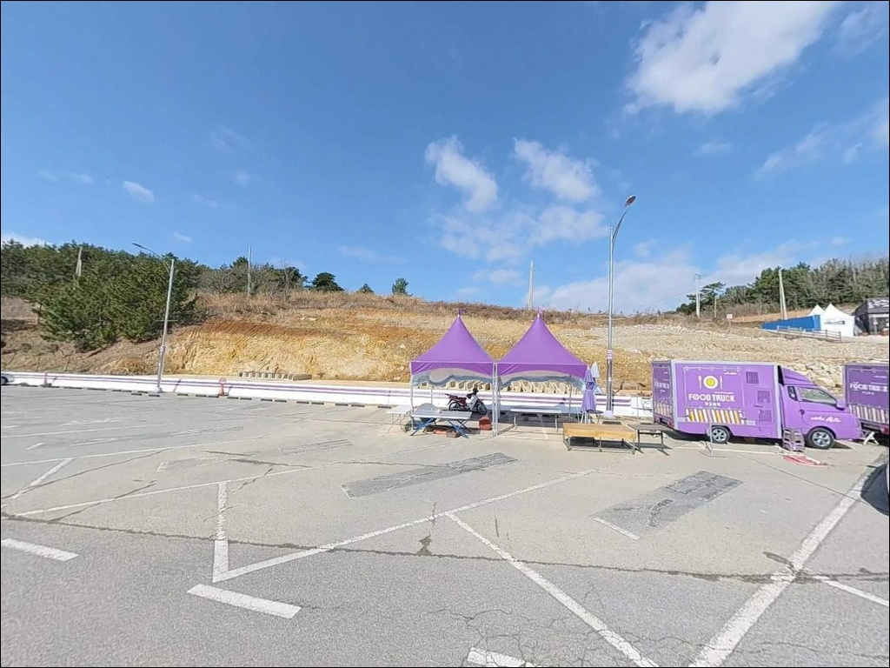
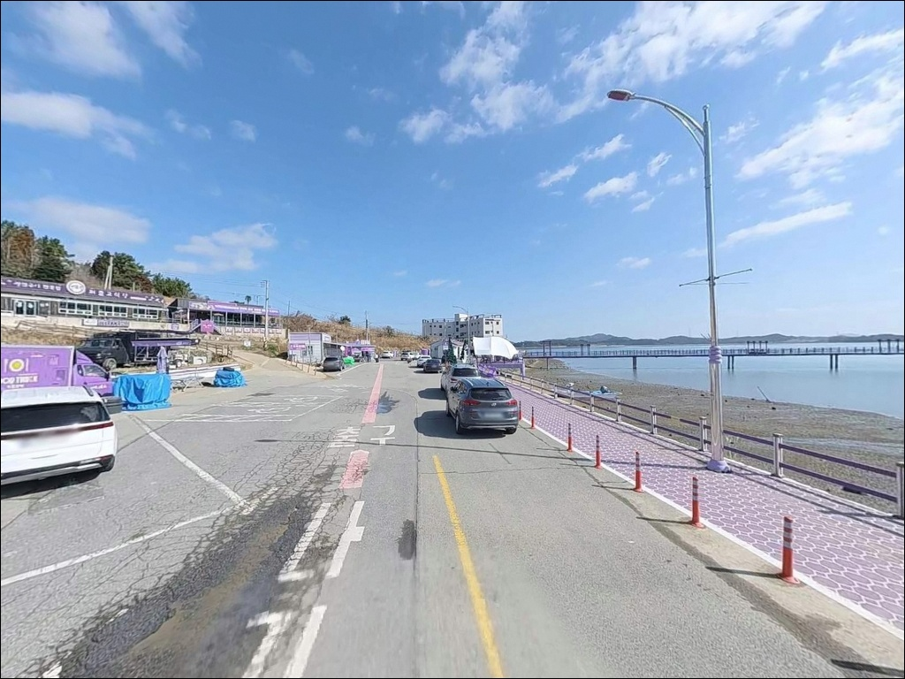
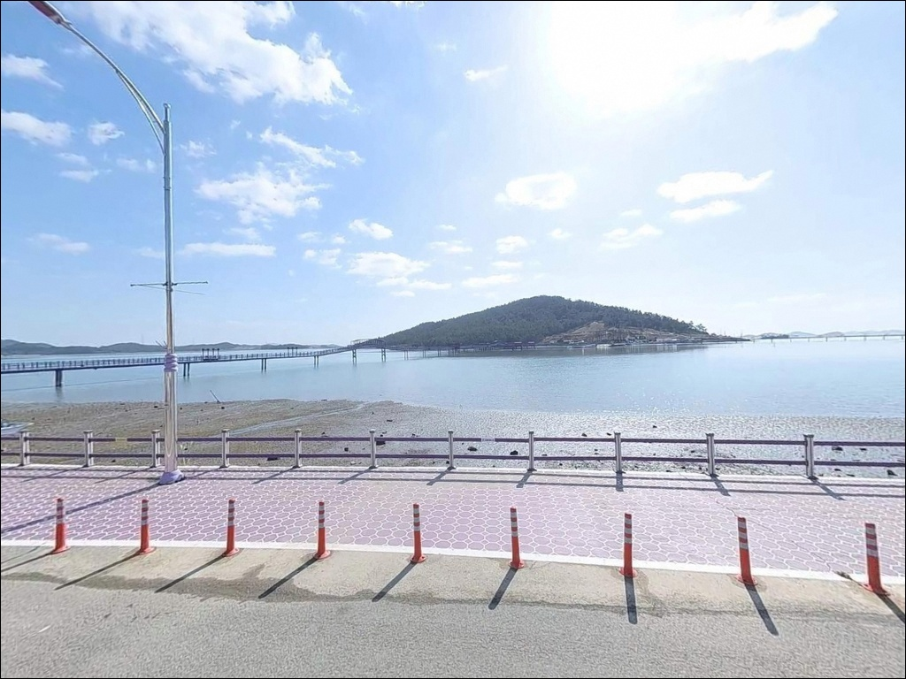
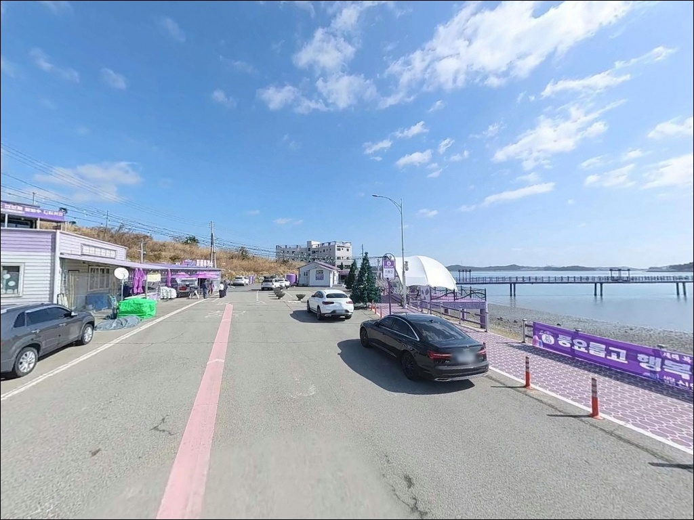
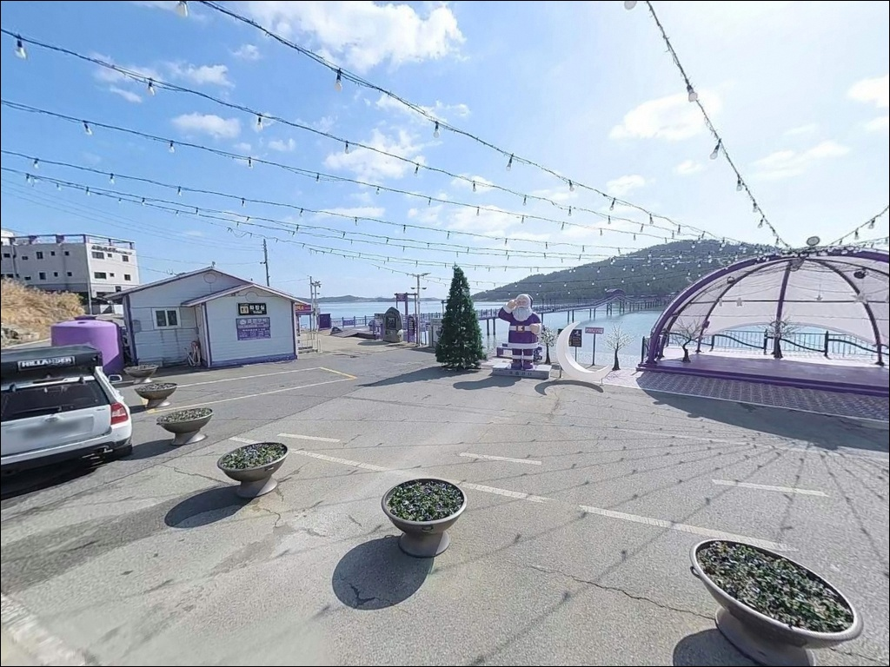
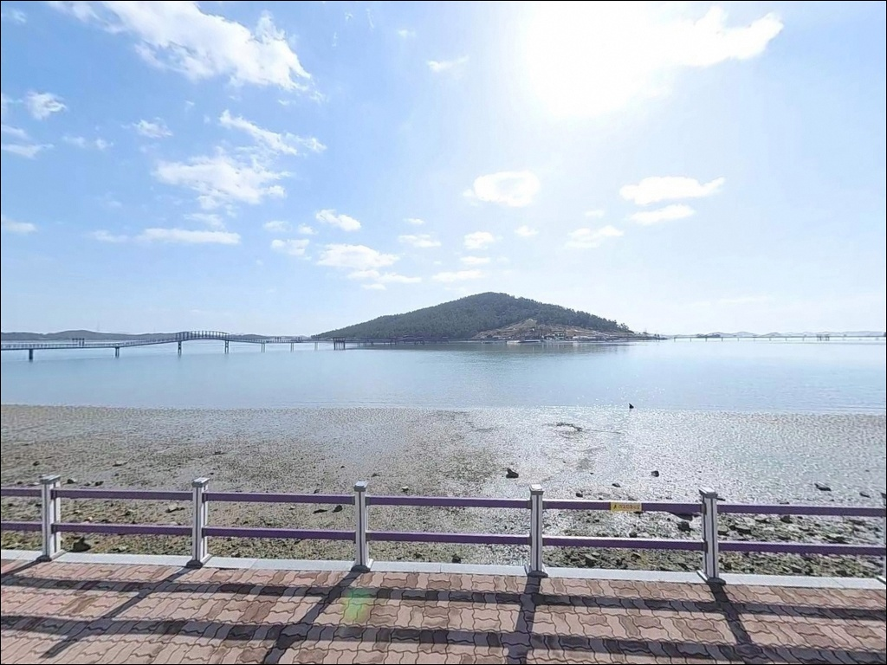

박지도 주차장, 전남 신안군 노을빛이 스며드는 차박, 낚시 겸용 감성 장소
이 페이지에는 광고(제휴 링크 포함)가 있으며, 광고 링크를 통해 구매하면 운영자가 판매 수익 또는 수수료를 받을 수 있습니다. 포인트 사진: 카카오맵 스카이뷰·로드뷰. 이 페이지의 지도·사진 이미지는 카카오맵의 실제 서비스 이미지와 다를 수 있습니다.


포인트 안내
박지도 주차장
전남 신안군 안좌면 소곡리 599-4
물때 계산 없이 이 포인트를 찾으면
낚시 자리 자체가 사라집니다.
간조 시 연안 갯벌이 넓게 드러나는 내만 구조로,
어떤 채비를 써도 착수가 어려운 상황이
고스란히 기다리고 있습니다.
안좌도와 박지도 사이 내만권에 위치한
소곡리 공영주차장 일대는
퍼플섬 관광 입구 역할을 겸하고 있어
낚시 전용 포인트로 알려진 곳은 아닙니다.
다만 주변 석축 선착장과 수로 구간이
생활낚시 진입 가능성을 갖춘
지형 조건을 만들어놓고 있습니다.
이 글은 박지도 주차장의
진입 여건, 물때 판단 기준,
지형 기반 낚시 가능성에 집중합니다.
조황 단정이나 특정 어종 보장은
이 글의 범위에 포함되지 않습니다.

1. 진입 동선과 포인트 접근성
박지도 주차장까지 차량 진입은
천사대교를 기점으로 시작합니다.
암태도 → 팔금도 → 안좌도를 거쳐
소곡두리길로 이어지는 동선이며,
관광지 메인 진입로로 조성된 경로라
도로 상태는 양호한 편입니다.
목포 기준 차량 40~50분 소요됩니다.
주차장 자체는 퍼플섬 관광 수요를 감안해
넓은 규모로 조성되어 있습니다.
소형부터 중형 차량까지 진입과 회차 모두
큰 어려움이 없는 구조이며,
무료 주차 환경으로 확인되어 있습니다.
다만 낚시 장비를 들고 실제 해안까지
도보로 이동해야 하는 구조입니다.
장비 이동 거리를 감안한 경량화가
현장 진입을 훨씬 수월하게 만듭니다.
박지도 주차장은 낚시 전용 포인트보다
안좌도 권역 탐색의 출발점으로
삼기에 적합한 공간입니다.

2. 차박 환경과 야간 체류 여건
박지도 공영주차장은 관광지 입구 특성상
일부 조명 시설이 갖춰진 구조입니다.
야간에는 관광객 차량이 빠지면서
한적한 환경으로 전환되는 편이며,
내만 구조 덕분에 파도 소음과
바람 영향이 상대적으로 적습니다.
관광 성수기, 특히 봄철 꽃 축제 시즌과
주말에는 차량 혼잡이 심해지는 것으로
알려져 있습니다.
차박 체류는 평일·비성수기가 유리한 조건이며,
관광 운영 시간 이후 야간의
주차장 접근 통제 여부는
현장에서 확인해야 합니다.


3. 주변 편의시설 및 인프라 현황
주차장 인근에서 확인된 식당으로는
바지락칼국수와 전복칼국수를 다루는
진번칼국수(안좌면 소곡두리길, 061-275-6089)와
전복죽·낙지연포탕 중심의
박지마을식당(안좌면 박지도길, 061-262-3003)이
있습니다.
좀 더 규모 있는 생활 인프라를 원한다면
안좌면사무소 인근으로 이동하면
농협하나로마트 안좌점과 주유소, 약국이
갖춰진 상권에 닿을 수 있습니다.
차량으로 10~15분 거리입니다.
낚시 용품, 얼음, 미끼류는
현장 인근에서 구하기 어려운 환경입니다.
출발 전 완비하고 진입하는 것이
현실적인 준비 방식입니다.

4. 물때를 모르면 낚시가 안 되는 포인트
박지도 주차장 방문 전 가장 먼저
확인할 것은 물때입니다.
내만 갯벌 구조로 간조 시 수심이
극히 낮아지는 지형이라,
어종 선택이나 채비보다
만조 타이밍 확인이 먼저입니다.
바다타임에서 안좌면 기준 물때를 확인하고
만조 전후 2시간을 기준으로
출발 시각을 잡는 방식이 기본입니다.
내만 갯벌 구조에서는
만조 전후 2시간이 실질적인
낚시 가능 시간입니다.
서남해 다도해권은 기상 변화가 빠른 편이라
당일 아침 기상청 해양기상 예보를
한 번 더 확인하는 것이
포인트 낭비를 막는 조건입니다.
갯벌과 석축이 맞닿은 구간은
미끄럼 위험이 있어
미끄럼 방지 신발은 필수입니다.
구명조끼는 현장에서 반드시 착용해야 하며,
관광지 인접 포인트라 주간에는
관광객 동선과 겹치지 않는
자리 선택이 기본 매너입니다.

5. 지형 기반 낚시 여건 분석
박지도 주차장 일대는
안좌도와 박지도 사이 내만 구조로
주변이 여러 섬으로 감싸인 다도해 해역에 속합니다.
간조 시 갯벌이 넓게 드러나는 구조이며,
만조 시 수심은 2~4m 수준의
얕은 수심대가 형성되는 지형입니다.
주차장 전방 석축 선착장과
퍼플교 교각 주변은
구조물을 낀 흐름이 형성되는 구간입니다.
조류 강도는 중~약 수준으로,
깊은 수심 포인트와 달리
생활낚시 성격이 강한 입지입니다.
이런 지형에서 기대해볼 수 있는 어종으로는
숭어, 붕장어, 망둥어 계열이 있습니다.
섬 사이 수로 구간이 발달한 지형 특성상
볼락·우럭류가 서식하기 좋은
구조물 주변도 함께 탐색해볼 수 있습니다.
출조 전 최신 조황은 "박지도 낚시"
또는 "안좌도 조황"으로
먼저 검색해 보시기 바랍니다.


6. 포인트에 어울리는 낚시 스타일
이 포인트에서 가장 기본이 되는 스타일은
원투낚시입니다.
만조 전후 갯벌이 잠기는 타이밍에
갯지렁이 채비를 멀리 보내
바닥층을 노리는 방식으로,
이 지형에서 활용하기 가장 수월한
접근법입니다.
라이트게임도 병행할 수 있는 스타일입니다.
석축 선착장 주변 구조물과
퍼플교 교각 인근을
소형 지그헤드 채비로 탐색하는 방식으로,
볼락·우럭류가 구조물 주변에
붙어 있는 상황을 노릴 수 있습니다.
만조 시 수로 형성 구간에서는
민장대 찌낚시도 가능한 조건이 됩니다.
수심이 확보되는 타이밍에
가까운 구간을 공략하는 방식으로,
감성돔류가 내만 안쪽으로 들어오는
봄~가을 시즌에 기대해볼 수 있습니다.

7. 대안 포인트와 플랜 B 동선
박지도 주차장에서 물때나 현장 여건이
맞지 않을 때 가장 먼저 이동할 곳은
복호항입니다.
차량으로 약 10분 거리에 위치하며,
넓은 항만 구조와 방파제를 갖추고 있어
낚시 자리 선택 폭이 넓은 편입니다.
팔금도 방파제도 이동 가능한 대안입니다.
안좌도 인근 10km 이내 권역에 있으며,
외항 노출 구조를 갖춘 방파제가
산재해 있어 박지도 주차장과
다른 지형 조건을 탐색할 수 있습니다.
안좌도 북측에 위치한
읍동선착장은
조류 방향이 다른 포인트로
탐색 가치가 있는 곳입니다.
박지도 주차장을 기점으로 삼고
안좌도 일대를 하나의 동선으로 묶어
이동하는 방식이 효율적입니다.

물때와 계절을 맞추면
박지도 주차장이 달라집니다
원투낚시나 라이트게임을 중심으로
생활낚시를 즐기는 낚시인이라면
박지도 주차장 일대의 내만 갯벌 구조가
나쁘지 않은 진입 여건입니다.
만조 타이밍만 맞추면 석축 선착장 주변에서
기본적인 낚시 자리는 잡을 수 있고,
안좌도 권역 전체를 묶어
이동형으로 접근하기 좋은 거점이기도 합니다.
반면 깊은 수심과 강한 조류를 원하거나
낚시 전용 포인트로 기대하고 간다면
현장에서 실망할 가능성이 있습니다.
물때 확인, 장비 경량화, 관광객 동선 배려,
이 세 가지를 갖추고 간다면
아직 많이 알려지지 않은 포인트에서
조용히 낚시를 즐길 수 있는 곳입니다.
퍼플섬 관광 인프라가 있는 평일 비성수기라면
낚시와 차박을 동시에 즐길 수 있는
서남해 다도해 하룻밤이 될 수 있는 곳입니다.